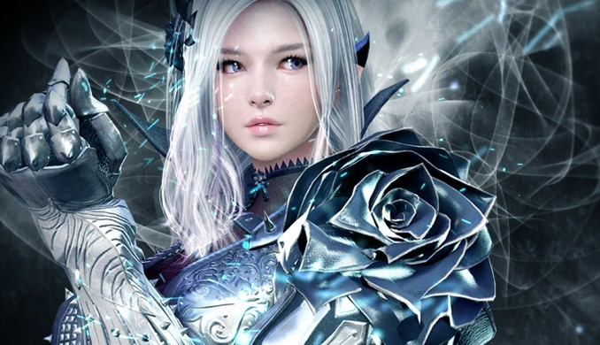

Contéudo do Canal
Black desert

Black Desert é um RPG on-line que acontece em um mundo de fantasia. No início, o jogador escolhe uma classe para jogar, sendo um total de 29 classes.
Além das quests, existe um sistema de moradia, guildas, um sistema de combate ativo e a possibilidade de cultivar, comercializar, criar, pescar e domar cavalos, o chamado lifetask. Outros recursos especiais incluem uma. um sistema climático, mudanças diurnas e noturnas e um modo parkour para escalar e explorar a área circundante.
Por fim, também há possibilidade de tocar instrumentos dentro do jogo, podendo baixar as músicas feitas por outros usuários ou simplesmente compor por si mesmo e colocar para tocar. E esse é o tipo de conteúdo do projeto, sendo complicado de trabalhar no layout do site por conta do uso de muitos iframes no formato de Shorts.
Warframe

Warframe é um jogo de tiro em terceira pessoa, cooperativo de ficção científica de 2013, desenvolvido e publicado pela Digital Extremes para Microsoft Windows, Xbox One (para membros Xbox Live Gold), PlayStation 4 (para usuários de membros grátis e mais) e já estava disponível no GamersFirst Live.
Warframe está ambientado num futuro distante onde o sistema solar é dominado entre o Grineer, uma raça do império de clones militarizados; o Corpus, um culto mercante de mega corporação com tecnologia robótica avançada e laser; e o infestado, o nome de uma doença e suas vítimas que devora tudo. Os jogadores assumem o papel de um Tenno, um guerreiro antigo criado pelo Orokin para combater um inimigo misterioso, mas deixado para dormir há gerações, até que uma entidade chamada Lotus é a única disposta em reunir as colônias dispersas e destruídas pela guerra ao longo do sistema.
O jogo também possui instrumentos para tocar, porém, são inferiores comparando com os do Black Desert Online. E esse também é um dos conteúdos do projeto, sendo complicado de trabalhar no layout do site por pelo mesmo motivo.